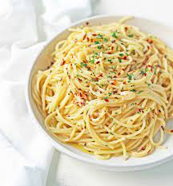

oil Base Sauce

What is the beauty of cream sauce pastas?
This particular type of pasta's base is made up of dairy products and in so is rich and creamy... hence the name.
Ingredients
- Olive Oil
- Salt
- pepper
- onion
- garlic
- chili pepper
Cooking Directions
- Put oil into your fry pan
- Dice them onions and throw them in
- Let them become a golden brown
- Finely chop the garlic
- Trow dat shit in too
- when arromatic and not before burning, mix a in some chili boiiii